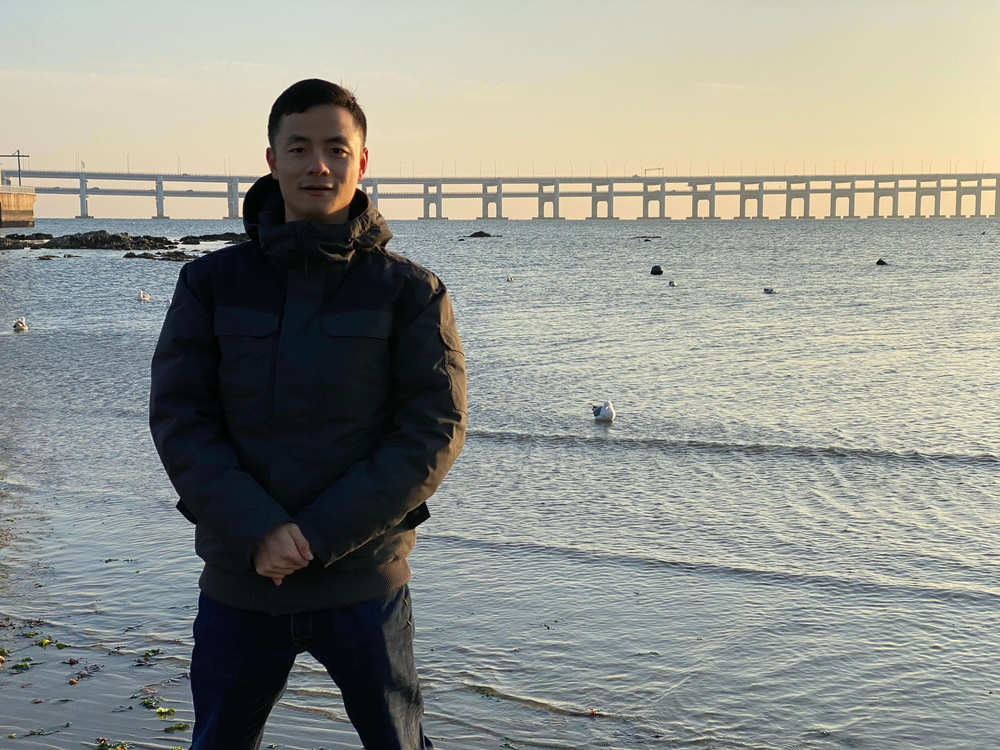

Web Development
- Design client-side and server-side architecture
- Development in React, Angular, Node.js,and more
- Application deployment on AWS and other cloud services
- Participate in CI/CD development environment using Agile to develop, unit test, and deploy
View projects
Mobile Development
- Design, implement and maintain mobile applications using REST web services
- Develop and manage well-functioning databases and applications
- Create use cases and develop functional documentation for projects and system enhancements included detailed training materials
View projects
Data analysis
- Use strong Python coding skills to research, design, develop and expand upon algorithms that will train neural networks to deliver actionable intelligence faster and more effectively
- Develop deep-learning software prototypes that demonstrate potential usefulness
- Analyze data from disparate sources including images, video, signals and more
View projects
About me

September, 2014, after I got a bachalor degree in Chemical Engineering,
I joined the Chemistry PhD program at Temple University, seeking to uncover
opportunities in chemistry research that have the potential to make significant impact in real life.
However, as the power and beauty of technogies brought to life by computer science rapidly unfold, I found that
my battleground lies in computer and information science, where there are numerous opportunities for innovations
and lastest technogies can be quickly applied to make the world a better place. I therefore switched my path and
got a master's degree in Computer Science.
With a strong passion for entrepreneurship, I'm enthusiastic about opportunities in social engineering innovations,
that's why I worked on Mutuality,
a social network platform that strives to help people to make effective, healthy, and inspiring social connections with
others and together build a happier and more hamonious society. However, due to limitations of the current visa I'm holding, entrepreneurship
is highly unlikely an option. Although I enjoy the supportive and friendly startup culture in Philadelphia, I have to invest my time elsewhere.
I worked at the Sbarro Institute for Cancer Research and Molecular Medicine at Temple University on data mining, web development and linux server maintenance,
until I found a front end engineer position at SES Networks, a world-leading satellite operator in Manassas, Virginia, a place where I have the
opportunities to take on more challenging projects.